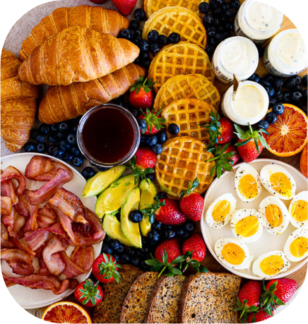

The concept for Airbnb emerged when the founders, struggling to afford rent in San Francisco, decided to rent out air mattresses in their apartment during a design conference when hotels were fully booked. They provided breakfast for their guests, hence the original name "AirBed & Breakfast.”
Inside Airbnb History

In 2008, during the SXSW (South by Southwest) conference held in Austin, the AirBed & Breakfast platform
made its debut, securing two bookings, one of which was made by Brian Chesky, one of the co-founders.
Airbnb,
then known as AirBed & Breakfast, gained acceptance into the Y Combinator program, a prestigious Silicon
Valley startup accelerator. This program provided valuable mentorship, resources, and guidance, contributing
significantly to Airbnb's growth and development as a successful business venture.
Airbnb guests
80M
Cumulative total guests
150M
Cumulative total listings
3M
Joe, one of Airbnb's co-founders, initiated the establishment of the internal design
studio called Samara. Under this initiative, a prototype for a future house was introduced in Japan,
marking a pioneering step towards innovative accommodation concepts within the company.
Additionally,
Airbnb made a momentous announcement by expanding its services beyond traditional home rentals with the
launch of Trips. This expansion aimed to offer travelers unique experiences and activities alongside
accommodations. The company celebrated this milestone by hosting the Airbnb Open event in Los Angeles,
which welcomed approximately 7,000 attendees from over 100 countries, highlighting the global reach and
impact of the platform.
AirBed & Breakfast underwent a significant transformation and rebranding, changing its name to Airbnb.
2010
Airbnb guests 140,000
Cumulative total guests 160,000
2011
Airbnb guests 800,000
Cumulative total guests ~1M
2012
Airbnb guests 3M
Cumulative total guests 4M+
2013
Airbnb guests 6M
Cumulative total guests 10M+
In just three weeks leading up to the first Rio World Cup, Airbnb succeeded in hosting more than 100,000
guests, uniting them within the community. This event generated an estimated sum of approximately $30 million
in earnings for hosts, marking a significant milestone for Airbnb during a major global gathering.
Additionally,
during this period, Airbnb introduced the Business Travel feature, simplifying the process of booking
work-related trips through their platform. This development aimed to cater specifically to the needs of
business travelers, offering them more convenient and suitable accommodations.
Airbnb's debut in Cuba marks one of the initial instances where a U.S. company provides lodging for American travelers subsequent to President Obama's relaxation of travel constraints.
Ten years later, nearly 300 million check-ins have occurred on Airbnb. With over 4,500 experiences, in January 2018, Airbnb initiated an extensive television and digital campaign emphasizing the beauty of both people and landscapes, focusing on opening doors rather than building walls.
Copyright © 2023 | airbnb Insights